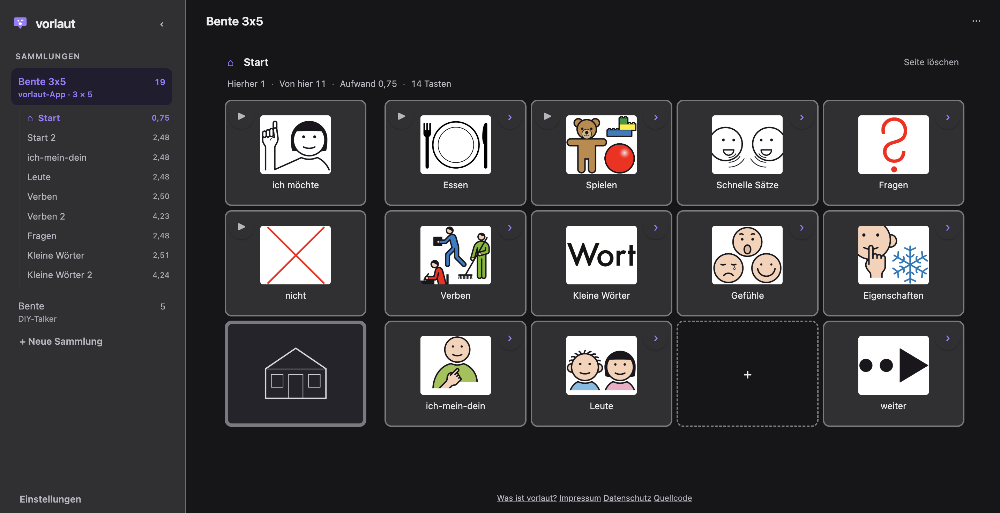
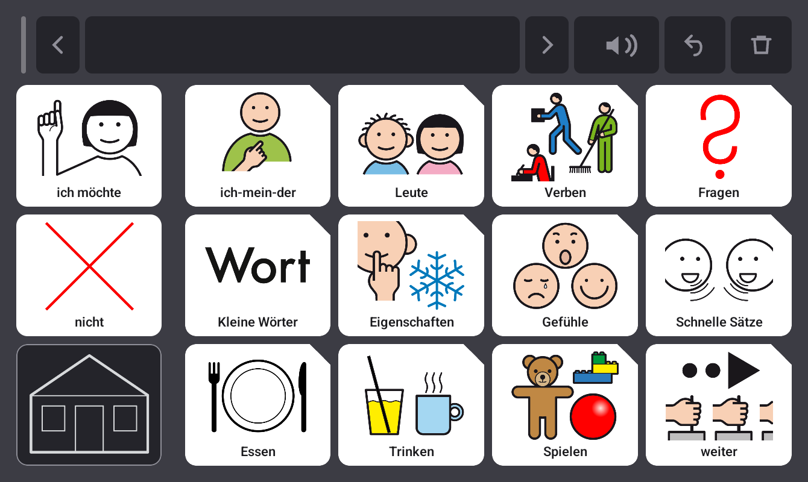
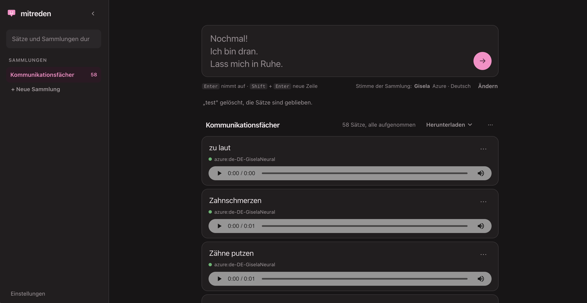
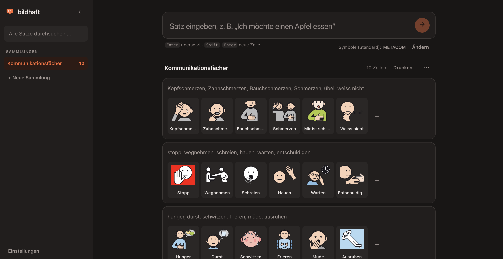

Unterstützte Kommunikation
Lautstark: freie Werkzeuge für Unterstützte Kommunikation.
Drei Programme, die zusammengehören und einzeln benutzbar sind. Eines baut das Vokabular für einen Talker, eines nimmt Sätze in einer festen Stimme auf, eines bringt Sätze als Piktogramme auf Papier. Kostenlos, ohne Konto und ohne Server.
vorlaut
Kommunikationstafeln bauen und auf dem Tablet benutzen
Ein Board-Editor im Browser und eine Android-App: Sie legen die Tafeln am Rechner an, benutzt werden sie auf dem Tablet. Ein Beispiel: Auf der Startseite liegt „ich möchte“, dahinter eine Seite mit Essen und Trinken. Zwei Tastendrücke ergeben „ich möchte trinken“. Fehlt ein Wort, ergänzen Sie es abends im Editor und spielen die Sammlung neu auf.


- Drei Teile
- Der Editor im Browser, die Android-App zum Benutzen und ein kleiner Talker mit fünf Tasten, für alle, denen ein Tablet nicht passt.
- Ihre Bilder
- Die Symbolsuche für ARASAAC ist eingebaut. Wer eine METACOM-Lizenz besitzt, wählt stattdessen den eigenen Ordner aus.
- Ihre Stimme
- Sie können jede Aussage selbst aufnehmen, damit die Tafel in einer vertrauten Stimme spricht, oder eine Computerstimme verwenden.
mitreden
Sätze eintippen, Audiodateien in einer Stimme zurückbekommen
Wer mit Unterstützter Kommunikation lebt, spricht oft über mehrere Geräte: eine Talker-App auf dem Tablet, ein Vorlesestift, einzelne Sprechtasten am Rollstuhl. Jedes bringt seine eigene Stimme mit, und derselbe Satz klingt je nach Gerät nach einer anderen Person.
In mitreden tippen Sie den Satz einmal ein und bekommen eine Audiodatei zurück. „Ich bin dran“ klingt dann auf der Sprechtaste genauso wie im Vorlesestift, weil überall dieselbe Aufnahme liegt.

- Eine Stimme
- Die Stimme gehört zur Sammlung, nicht zum einzelnen Satz. Entscheiden Sie sich später für eine andere, nimmt mitreden alle Sätze damit neu auf, und es passt wieder zusammen.
- Fertige Dateien
- Die Aufnahmen laden Sie herunter und kopieren sie auf das Gerät, das sie abspielen soll. Danach braucht das Gerät kein Internet.
- Kein Talker
- mitreden spricht nicht für jemanden. Es ist die Werkstatt dahinter: Text hinein, Aufnahmen heraus.
bildhaft
Sätze in Piktogramme übersetzen und drucken
Sie tippen einen Satz und bekommen eine Reihe Symbole zurück. Aus „Ich möchte einen Apfel essen“ werden vier Bilder mit Beschriftung, die Sie ausdrucken und laminieren können.
Gedacht ist das für alle, die viel auf einmal übersetzen: dreißig Zeilen an einem Nachmittag, ein ganzes Bilderbuch, die Karten für eine ganze Gruppe.

- Zum Nachbessern
- Zu jedem Wort schlägt bildhaft ein Symbol vor. Passt eines nicht, wählen Sie ein anderes; die Änderung bleibt gespeichert.
- Zum Drucken
- Satzstreifen für eine Zeile, Kartenbögen für einzelne Wörter. Beides geht direkt in den Drucker.
- Eigene Symbole
- ARASAAC ist eingebaut. Wer eine METACOM-Lizenz besitzt, wählt stattdessen den eigenen Ordner aus.
Gemeinsam
Was für alle drei gilt
- Im Browser
- Aufrufen und anfangen. Nichts zu installieren, nichts anzumelden, kein Schlüssel einzutragen.
- Auf Ihrem Gerät
- Was Sie anlegen, bleibt in Ihrem Browser und in den Dateien, die Sie selbst sichern. Es gibt keinen Server, auf dem etwas davon liegt.
- Quelloffen
- MIT-Lizenz, Quelltext bei GitHub. Wer etwas anders braucht, kann es ändern oder melden.
Woher das kommt
Gebaut von einer Mutter, nicht von einer Firma
Ich baue diese Programme für meine Tochter. Was dabei entsteht, steht offen, weil andere Familien vor denselben Fragen stehen und Hilfsmittel für Unterstützte Kommunikation teuer sind.
Es gibt keine Firma dahinter, keine Finanzierung und nichts zu verkaufen. Rückmeldungen gehen an steffi@lautstark.tech.